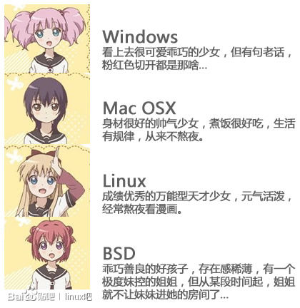

Test Org Syntax
Table of Contents
This is the index file
This repos aimed at demonstrating how to export org files to html.
Example Contents
WATING Head 2 HOME OFFICE
Heading 3
This is a sample paragraph.
TODO Head 2
we'll have embeded code here: (apply + '(1 2 3 4)).
Here we'll include a list.
- item 1
- subitem 1
- subitem 2
- item 2
- ordered item 1
- ordered item 2
- mixed item 1
- mixed item 2
HELLO :: This is a description node WORLD :: another one.
- ordered item 3.
- item 3
Some example from a text file.
Another plain inline example: Here is an example
Some example from a text file.
Links
File links ended with `org` will be converted to html. remember
Image link:

Figure 1: This is the caption for the next figure link (or table)
(defun org-xor (a b) "Exclusive or." (if a (not b) b))
Test of footer
insert math
This is also a test.
\begin{equation} x=\sqrt{b} \end{equation}If \(a^2=b\) and \( b=2 \), then the solution must be either $$ a=+\sqrt{2} $$ or \[ a=-\sqrt{2} \].